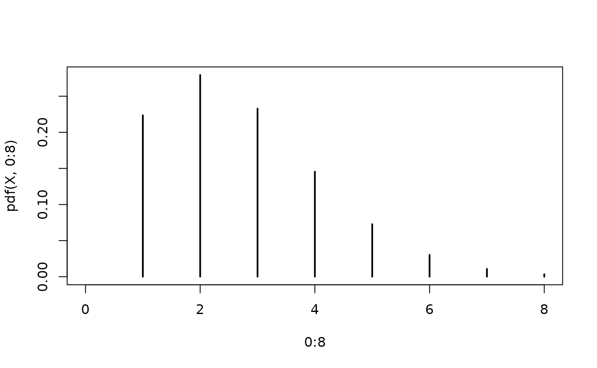
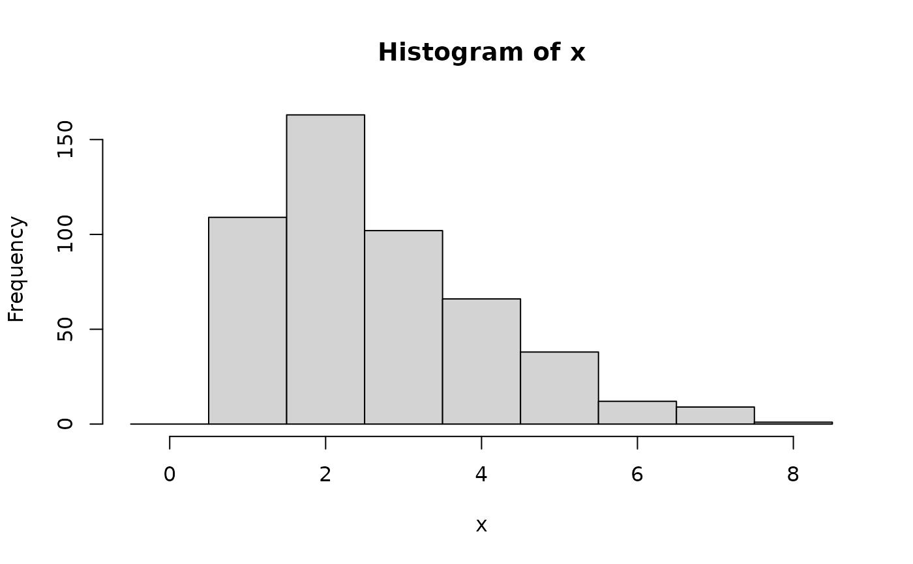

Zero-truncated Poisson distributions are frequently used to model counts where zero observations cannot occur or have been excluded.
Arguments
- lambda
Parameter of the underlying untruncated Poisson distribution. Can be any positive number.
Details
We recommend reading this documentation on https://alexpghayes.github.io/distributions3/, where the math will render with additional detail.
In the following, let \(X\) be a zero-truncated Poisson random variable with parameter
lambda = \(\lambda\).
Support: \(\{1, 2, 3, ...\}\)
Mean: $$ \lambda \cdot \frac{1}{1 - e^{-\lambda}} $$
Variance: \(m \cdot (\lambda + 1 - m)\), where \(m\) is the mean above.
Probability mass function (p.m.f.):
$$ P(X = k) = \frac{f(k; \lambda)}{1 - f(0; \lambda)} $$
where \(f(k; \lambda)\) is the p.m.f. of the Poisson
distribution.
Cumulative distribution function (c.d.f.):
$$ P(X = k) = \frac{F(k; \lambda)}{1 - F(0; \lambda)} $$
where \(F(k; \lambda)\) is the c.d.f. of the Poisson distribution.
Moment generating function (m.g.f.):
$$ E(e^{tX}) = \frac{1}{1 - e^{-\lambda}} \cdot e^{\lambda (e^t - 1)} $$
See also
Other discrete distributions:
Bernoulli(),
Binomial(),
Categorical(),
Geometric(),
HurdleNegativeBinomial(),
HurdlePoisson(),
HyperGeometric(),
Multinomial(),
NegativeBinomial(),
Poisson(),
PoissonBinomial(),
ZINegativeBinomial(),
ZIPoisson(),
ZTNegativeBinomial()
Examples
## set up a zero-truncated Poisson distribution
X <- ZTPoisson(lambda = 2.5)
X
#> [1] "ZTPoisson(lambda = 2.5)"
## standard functions
pdf(X, 0:8)
#> [1] 0.000000000 0.223563725 0.279454656 0.232878880 0.145549300 0.072774650
#> [7] 0.030322771 0.010829561 0.003384238
cdf(X, 0:8)
#> [1] 0.0000000 0.2235637 0.5030184 0.7358973 0.8814466 0.9542212 0.9845440
#> [8] 0.9953735 0.9987578
quantile(X, seq(0, 1, by = 0.25))
#> [1] 1 2 2 4 Inf
## cdf() and quantile() are inverses for each other
quantile(X, cdf(X, 3))
#> [1] 3
## density visualization
plot(0:8, pdf(X, 0:8), type = "h", lwd = 2)

## corresponding sample with histogram of empirical frequencies
set.seed(0)
x <- random(X, 500)
hist(x, breaks = -1:max(x) + 0.5)
